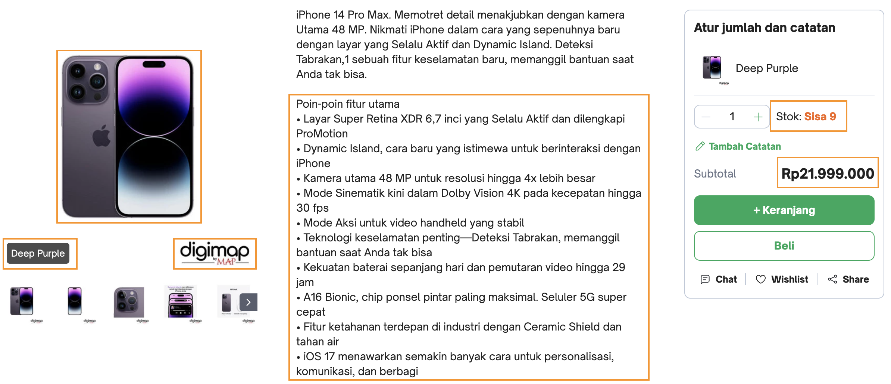

Pengenalan Conjoint Analysis#
Selamat datang di hari pertama pada seri webinar Conjoint Analysis for Retail Business.
Sebagai ikhtisar, kita akan membahas beberapa topik seputar berikut ini:
kenapa perlu melakukan conjoint analysis
apa saja jenis-jenisnya?
komponen yang diperlukan dalam sebuah studi conjoint
bentuk data untuk conjoint analysis
Kenapa perlu Conjoint Analysis?#
Misalkan, kamu mempunyai uang sejumlah IDR 30,000,000 (amin üôèüèª).
Dikarenakan kamu sudah lama tidak meng-upgrade handphone (kamu sekarang menggunakan Nokia 3310), kali ini kamu ingin mendapatkan yang baru.
{kind=link}
Setelah melakukan browsing di beberapa toko, kamu tertarik dengan 2 produk berikut ini.
Sekarang, dari pilihan ini, coba jelaskan preferensi kamu ü§î!
Bagaimana preferensi kamu?
Dalam proses kamu memilih produk tersebut, kamu kemungkinan besar akan mempertimbangkan beberapa faktor. Faktor-faktor ini juga tidak bisa dipisahkan satu dengan yang lainnya karena mungkin faktor A berhubungan dengan faktor B, menurut kamu.
Dari contoh gambar di atas, kamu mungkin akan akan fokus pada beberapa bagian dari gambar.
Sekarang, mari kita beralih ke perspektif perusahaan si penyedia.
Bagaimana kita bisa membuat sebuah produk yang sesuai dengan keinginan customer? Jika tidak bisa memenuhi keinginan semua customer, fitur/atribut produk yang mana yang bisa memikat customer? Bagaimana kita bisa tahu?
Fig. 2 – Paradigma Proses Memilih.#
Diagram di atas mencoba mengilustrasikan gambaran sederhana bagaimana sebuah keputusan pemasaran dibuat. Perusahaan mempertimbangkan bagaimana memberikan persepsi berdasarkan beberapa atribut, seperti produk, harga, dan lainnya, yang menjadi basis dari preferensi customer dalam memilih.
Ujung dari diagaram tersebut adalah perusahaan kemudian bisa memprediksi bagaimana respon pasar secara umum terhadap produk beserta atribut-atribut yang melekat.
Secara umum, Rao [Rao14] menyebutkan bahwa metode untuk mengestimasi struktur preferensi konsumen terhadap setiap level dari atribut dari alternatif-alternatif yang tersedia merupakan conjoint analysis (analisis konjoin).
Analisis konjoin dapat digunakan untuk:
memilih fitur sebuah produk
menilai sensitivitas harga
memprediksi adopsi dari produk atau layanan baru
Jenis Conjoint Analysis (CA)#
Dalam praktiknya, sangat banyak sekali jenis atau tipe dari analisis konjoin yang diterapkan di industri secara umum.
Untuk kali ini, kita akan coba masuk ke jenis analisis konjoin berdasarkan tipe respon dan pendekatan survei (Conjointly [Con]).
Berdasarkan Tipe Respon#
Rating-based Conjoint
Responden diminta untuk memberikan sebuah rating terhadap alternatif produk yang ditunjukkan. Skalanya bisa berada di antara 0 sampai 100. Umumnya, responden diminta untuk mengalokasikan skor untuk masing-masing alternatif produk sedemikian hingga jumlah skor yang diberikan sama dengan skor tertentu (misalkan 100).
Ranking-based Conjoint
Responden akan diminta untuk mengurutkan alternatif-alternatif produk yang ditampilkan dari yang terbaik ke yang terburuk. Biasanya, urutan yang dihasilkan lebih dari 2 tingkat, alias terdapat alternatif yang berada di antara pilihan terbaik dan terburuk.
Best-Worst Conjoint
Responden diminta untuk memilih pilihan mana yang terbaik dan mana yang terburuk dari beberapa alternatif produk. Berbeda dengan ranking-based, responden hanya akan memilih 2 produk yang masing-masing termasuk terbaik dan terburuk.
Choice-based Conjoint
Metode ini merupakan metode yang paling praktis dan juga populer. Responden akan diminta untuk memilih dari beberapa alternatif produk, mana yang kira-kira dibeli atau dipilih.
Komponennya apa saja?
Dalam sebuah studi konjoin, terdapat 2 komponen penting:
atribut
level
Kedua komponen tersebut disajikan kepada responden dalam bentuk beberapa pertanyaan (stimuli)
Berdasarkan Jumlah Atribut yang Ditunjukkan#
Dengan masih mempertimbangkan jenis CA di atas, ada 2 jenis CA dilihat dari bagaimana kita memperlihatkan atribut sebuah produk sebagai bahan preferensi responden.
Full profile
Pada studi full-profile, semua atribut dari setiap alternatif produk diperlihatkan kepada responden, di setiap pertanyaan. Meski begitu, sangat direkomendasikan untuk membatasi jumlah atribut maksimal 6 agar tidak semakin mempersulit responden dalam mencerna informasi dan menentukan pilihan.
Partial profile
Pada studi partial-profile, hanya sebagian fitur/atribut dari produk yang ditunjukan sebagai dasar preferensi responden. Cara ini biasanya dipilih ketika kita ingin memilih fitur baru atau mengembangkan produk baru dengan beberapa calon fitur yang sudah ditentukan sebelumnya.
Jenis CA lainnya
Selain beberapa jenis analisis konjoin di atas, masih banyak lagi jenis atau kategori yang belum dibahas, misalkan adaptive-choice conjoint (ACA), adaptive choice-based conjoint, dan lainnya.
Bentuk Data dalam Conjoint Analysis#
Jika kalian pernah bergelut dengan data tabular atau data pada umumnya, setiap baris pada tabel merepresentasikan satu observasi atau pengamatan. Sebagai contoh, pada ilustrasi tabel berikut, terdapat 3 observasi yang merepresentasikan jumlah sales pada setiap negara di tahun 2018.
year |
sales |
country |
|---|---|---|
2018 |
50456 |
UK |
2018 |
78451 |
US |
2018 |
1350869 |
ID |
Pada data hasil survei konjoin, setiap baris bisa saja bukan merupakan observasi yang berbeda. Perhatikan contoh data berikut.
resp_id |
question |
alternative |
segment |
seat |
trans |
convert |
price |
choice |
|---|---|---|---|---|---|---|---|---|
1 |
1 |
1 |
basic |
2 |
manual |
yes |
35 |
0 |
1 |
1 |
2 |
basic |
5 |
auto |
no |
40 |
0 |
1 |
1 |
3 |
basic |
5 |
auto |
no |
30 |
1 |
1 |
2 |
1 |
basic |
5 |
manual |
no |
35 |
0 |
1 |
2 |
2 |
basic |
2 |
manual |
no |
30 |
1 |
1 |
2 |
3 |
basic |
4 |
auto |
no |
35 |
0 |
2 |
1 |
1 |
basic |
5 |
manual |
no |
35 |
0 |
2 |
1 |
2 |
basic |
5 |
manual |
yes |
35 |
0 |
2 |
1 |
3 |
basic |
4 |
auto |
yes |
40 |
1 |
2 |
2 |
1 |
basic |
4 |
manual |
no |
30 |
0 |
2 |
2 |
2 |
basic |
2 |
auto |
yes |
35 |
0 |
2 |
2 |
3 |
basic |
4 |
auto |
no |
35 |
1 |
Karena setiap responden disajikan beberapa pertanyaan (sets), di mana masing-masing pertanyaan memiliki beberapa alternatif yang setiap alternatif memiliki atribut dan tingkat level tertentu.
Pada data survei konjoin di atas, responden 1 dan 2 disajikan 2 pertanyaan, yang masing-masing memiliki 3 alternatif. Terlihat juga terdapat 5 atribut yang digunakan, yaitu:
segmentseattransconvertprice
Kolom terakhir, choice, merupakan sebuah flag yang merepresentasikan pilihan dari responden. Sebagai contoh, pada pertanyaan 2, responden ke-1 memilih alternatif ke-2 sedangkan responden ke-2 memilih alternatif ke-3.
import pandas as pd
choice_data = pd.read_csv("../../data/sportscar_choice/sportscar_choice_long.csv")
choice_data
| resp_id | ques | alt | segment | seat | trans | convert | price | choice | |
|---|---|---|---|---|---|---|---|---|---|
| 0 | 1 | 1 | 1 | basic | 2 | manual | yes | 35 | 0 |
| 1 | 1 | 1 | 2 | basic | 5 | auto | no | 40 | 0 |
| 2 | 1 | 1 | 3 | basic | 5 | auto | no | 30 | 1 |
| 3 | 1 | 2 | 1 | basic | 5 | manual | no | 35 | 0 |
| 4 | 1 | 2 | 2 | basic | 2 | manual | no | 30 | 1 |
| ... | ... | ... | ... | ... | ... | ... | ... | ... | ... |
| 5995 | 200 | 9 | 2 | fun | 2 | auto | yes | 35 | 0 |
| 5996 | 200 | 9 | 3 | fun | 4 | manual | no | 30 | 0 |
| 5997 | 200 | 10 | 1 | fun | 4 | auto | yes | 40 | 0 |
| 5998 | 200 | 10 | 2 | fun | 4 | auto | no | 30 | 1 |
| 5999 | 200 | 10 | 3 | fun | 4 | manual | no | 40 | 0 |
6000 rows × 9 columns
choice_data.head(12)
| resp_id | ques | alt | segment | seat | trans | convert | price | choice | |
|---|---|---|---|---|---|---|---|---|---|
| 0 | 1 | 1 | 1 | basic | 2 | manual | yes | 35 | 0 |
| 1 | 1 | 1 | 2 | basic | 5 | auto | no | 40 | 0 |
| 2 | 1 | 1 | 3 | basic | 5 | auto | no | 30 | 1 |
| 3 | 1 | 2 | 1 | basic | 5 | manual | no | 35 | 0 |
| 4 | 1 | 2 | 2 | basic | 2 | manual | no | 30 | 1 |
| 5 | 1 | 2 | 3 | basic | 4 | auto | no | 35 | 0 |
| 6 | 1 | 3 | 1 | basic | 5 | auto | yes | 35 | 1 |
| 7 | 1 | 3 | 2 | basic | 4 | auto | yes | 30 | 0 |
| 8 | 1 | 3 | 3 | basic | 4 | manual | no | 40 | 0 |
| 9 | 1 | 4 | 1 | basic | 2 | manual | yes | 30 | 0 |
| 10 | 1 | 4 | 2 | basic | 4 | manual | yes | 40 | 0 |
| 11 | 1 | 4 | 3 | basic | 4 | auto | yes | 35 | 1 |
print("Num of respondents:", choice_data.resp_id.nunique())
print("Num of questions:", choice_data.ques.nunique())
print("Num of alternatives:", choice_data.alt.nunique())
Num of respondents: 200
Num of questions: 10
Num of alternatives: 3
choice_data[choice_data.ques == 1].head(18)
| resp_id | ques | alt | segment | seat | trans | convert | price | choice | |
|---|---|---|---|---|---|---|---|---|---|
| 0 | 1 | 1 | 1 | basic | 2 | manual | yes | 35 | 0 |
| 1 | 1 | 1 | 2 | basic | 5 | auto | no | 40 | 0 |
| 2 | 1 | 1 | 3 | basic | 5 | auto | no | 30 | 1 |
| 30 | 2 | 1 | 1 | basic | 5 | manual | no | 35 | 0 |
| 31 | 2 | 1 | 2 | basic | 5 | manual | yes | 35 | 0 |
| 32 | 2 | 1 | 3 | basic | 4 | auto | yes | 40 | 1 |
| 60 | 3 | 1 | 1 | basic | 4 | auto | yes | 35 | 1 |
| 61 | 3 | 1 | 2 | basic | 4 | auto | no | 35 | 0 |
| 62 | 3 | 1 | 3 | basic | 5 | auto | yes | 40 | 0 |
| 90 | 4 | 1 | 1 | basic | 2 | auto | no | 30 | 0 |
| 91 | 4 | 1 | 2 | basic | 5 | manual | no | 30 | 1 |
| 92 | 4 | 1 | 3 | basic | 4 | manual | yes | 40 | 0 |
| 120 | 5 | 1 | 1 | basic | 5 | auto | yes | 35 | 0 |
| 121 | 5 | 1 | 2 | basic | 2 | auto | yes | 30 | 1 |
| 122 | 5 | 1 | 3 | basic | 4 | manual | no | 35 | 0 |
| 150 | 6 | 1 | 1 | basic | 5 | manual | yes | 35 | 0 |
| 151 | 6 | 1 | 2 | basic | 2 | auto | yes | 30 | 1 |
| 152 | 6 | 1 | 3 | basic | 2 | manual | no | 30 | 0 |
choice_data[(choice_data.resp_id == 1) & (choice_data.ques == 1)]
| resp_id | ques | alt | segment | seat | trans | convert | price | choice | |
|---|---|---|---|---|---|---|---|---|---|
| 0 | 1 | 1 | 1 | basic | 2 | manual | yes | 35 | 0 |
| 1 | 1 | 1 | 2 | basic | 5 | auto | no | 40 | 0 |
| 2 | 1 | 1 | 3 | basic | 5 | auto | no | 30 | 1 |